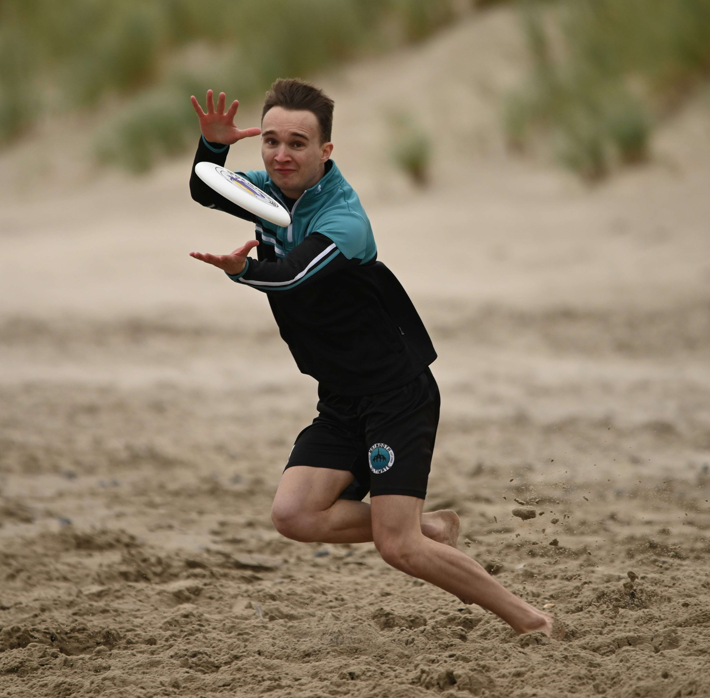
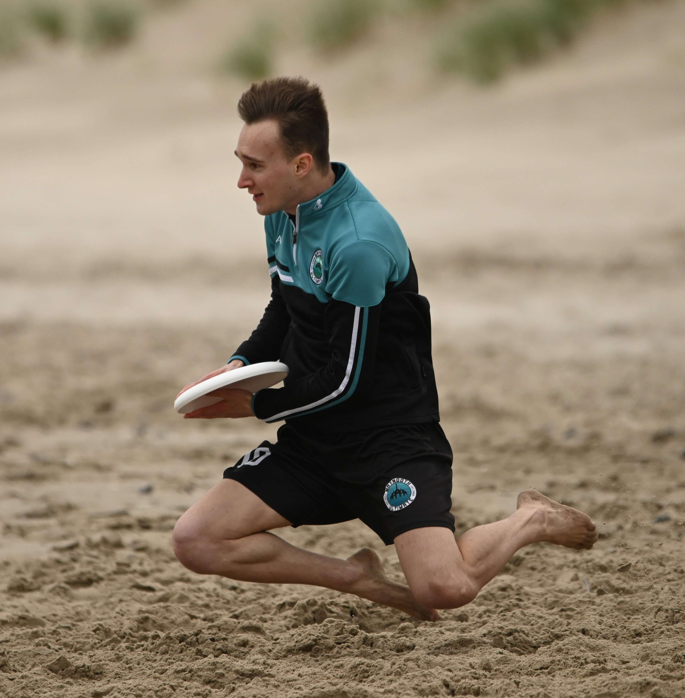

My name is Adam Furlong, and congratulations, you have found my homepage!
I don't have many professional images of myself, so for now enjoy these :)
 On this page, I will list some interests of mine, link to the other parts of the website and give a quick breakdown of my education (I have a MSc in physics and maths). Happy reading!
It really should not surprise you to know that I quite enjoy mathematics. If there is ever a couple of weeks where I was free, (or had an upcoming exam that I didn't want to study for), I could usually be found be squirreled away working on some obscure problem. The ones that I think I have made some progress on will be slowly uploaded onto the Projects section of the website. Many of the problems that interest me are combinatorical in nature: for example, finding what numbers, or how many numbers, have a certain property. In the case where the problem gives a sequence as a result, I usually throw together a Python script to get my hands on the first few terms, and then search for it on the Online Encyclopedia of Integer sequences (OEIS). Sometimes this finds some previous work has been done on the problem. In other instances, this website is how I find problems to work on! Other pieces of maths I find interesting, but haven't erally worked on, I'll shove in this Maths section.
Let me paraphrase this iconic Tumblr post. There are two opposing ways to view the world. It is a great tragedy that there are so many books that no one has time to read them all. Or, it is a great fortune that we will never run dry of the joy of reading a good book for the first time. The second view is far more fun! To read my ramblings on some actual books, please see the Reading page.
I am sure you have heard of a Rubik's cube. Speedcubing is the solving of this puzzle (or one of its variants) as fast as possible. This was a hobby of mine for many years (I can solve a 3x3x3 Rubik's cube in about 11 seconds). I attended 14 competitions across Ireland, earning 20 podiums. I will talk about it more here.
I played a lot of chess with my father growing up, and even more with friends in university. I'm not actually much good at it though (~1400 ELO on Chess.com). A friend and I did go to one FIDE competition, and got smoked by some ten-year-old kids. We knew that would happen, but it was still a humbling exerience!
I am not a huge fan of computer games, but there are a few that I really enjoy. My favourite is undoubtedly Factorio, which I cannot recommend enough. I still have't played the Space Age Expansion... I fear it would rob me of a month of my life. I have always loved Minecraft, but with every update it feels less and less familiar and cosy. I just want to punch trees, build a little tower and mine for diamonds :,(. Also played some REPO recently. (more people => more chaos => way more fun)
I also enjoy Minesweeper, Sudoku, Kakuro, and some card games such as Poker, Durak.
Sometimes, when the urge to keep fit and get some fresh air motivates out the door, I enjoy running. I ran the 2024 Dublin Half Marathon, in something like 2:06. Next time, I hope for faster. Wish me luck!
Our world is vast and beautiful, and I can't wait to explore more of it. Unfortunately, my bank account insists I should have other priorities... If you are lucky, I will remember to post some photos here.
Growing up, I always loved maths and had a strong interest in science, especially physics and the formation of the universe. I was not a straight-A student, (maybe straight-B), but I did quite well in school. In fact, I got the highest Junior Certificate of my (small) year-group in 2018, and the highest Leaving Certificate of my (now smaller) year-group in 2021, earning 578 points. Despite this, I didn't really enjoy secondary school at all. It felt like such an endless chore, always 'learning' things about which I couldn't care less. I knew university would bring the freedom to study whatever I wanted, so I looked forward in great anticipation...
Going into university in 2021, I wanted to pursue something maths-related, perhaps with some physics, that would be difficult enough to really challenge me ("pressure makes diamonds" and all that jazz). The course I chose was the unique BSc in Theoretical Physics and Mathematics of Maynooth University. This is a three-year accelerated course, and is not for the meek. We were thrown straight into a third year Classical Mechanics class, which is difficult enough if you are a third year. This was tough, especially for the unfortunate souls who had not studied physics before (*whistles inconspicuously*). Pure Mathematics proved no easier, as the first semester forced us to realise that we knew almost nothing about mathematics. Another victim summarised it well: "If you are looking for a fun freshers week don't do this course". That being said, I went on to absolutely adore the mathematics, get through the physics, and meet some amazing people.
After three of the best years of my life, I graduated in September
2024. I am delighted to have earned a First Class Honours grade
(83%), and
some awards
(eg. for attaining the highest grades in the Pure Mathematics
exams of our final year). While I did work
my ass off incredibly hard, I owe a great debt to the
friends I made along the way. These achievements would have been
impossible, and I would not be who I am today, without you. Thank
you, one and all.
From September 2024 to August 2025 I furthered my studies by
completing the
MSc in Theoretical Physics and Mathematics. This is the first year this course was run
(and it showed), and the class that enrolled was a bit
smaller than the undergrad. There were plenty of interesting
classes on offer. Here are some I enjoyed: Riemannian Manifolds,
Quantum Field Theory, Measure Theory. The course consisted of 60
credits (ECTS) of classes, followed by 30 credits of a summer
research project. I wrote my thesis on Kernel Density Estimation,
and it can be found in the
Projects tab.
Again, I am proud to say I earned my First Class Honours (92%). (Though this is less a testament to my amazing mathematical prowess than it is to how lenient the Mathematics department was with their grading this year.) And again, my boundless gratitude belongs to those who made it possible, including my thesis supervisor Dr. Galatia Cleanthous. I believe the graduation ceremony will be in October.
...watch this space. The long-term goal is to remain a life-long learner. There are mountains of mathematics to one day climb. I'd love to pick up some more programming along the way too. But for now, the short-term goal is to afford rent, and go through some personal development in other areas. I have many books to read and places to visit.